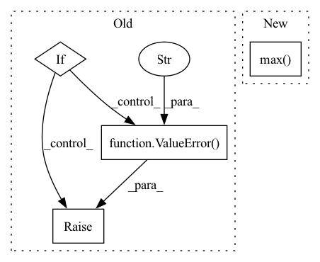

Pattern ID :28144
Before Change
grand_matrix_list = [grand_matrix] * (ix_l - ix_f + 1)
em_list = []
if self.id is not None:
for i, em in enumerate(grand_matrix_list):
em_list.append(EmitterSet(xyz=em[:, :3],
phot=em[:, 3],
frame_ix=em[:, 4],
id=em[:, 5]))
else:
raise ValueError("Deprecated." )
return em_list
After Change
The first frame is assumed to be 0. If it"s negative go to the lowest negative.
if self.num_emitter != 0:
ix_low_ = ix_low if ix_low is not None else frame_ix.min()
ix_up_ = ix_up if ix_up is not None else frame_ix.max()
grand_matrix_list = torch_cpp.split_tensor(grand_matrix, frame_ix, ix_low_, ix_up_)
else:In pattern: SUPERPATTERN
Frequency: 3
Non-data size: 4
Instances Fragment ID: 83094143
Project Name: turagalab/decode
Commit Name: ec0a450a970493ee8764672f59d1e8e8e14b69a7
Time: 2019-04-26
Author: gitdev@LRM.photo
File Name: deepsmlm/generic/emitter.py
M Class Name: EmitterSet
N Class Name: EmitterSet
M Method Name: split_in_frames(3)
N Method Name: split_in_frames(3)
M Parent Class:
N Parent Class:
M File Name: deepsmlm/generic/emitter.py
N File Name: deepsmlm/generic/emitter.py
M Start Line: 74
M End Line: 110
N Start Line: 101
N End Line: 133
Before Change
bool
True if is categorical according to input numbers
if len(column) == 0:
raise ValueError(
""column" instance is empty, cannot determine "
"whether it is categorical or not"
)
n_unique = column.nunique(dropna=True)
n_samples = len(column.dropna())
After Change
get_logger().warning("Column %s only contains NaN values.", column.name)
return False
n_samples = np.max( [n_samples, 1000])
n_unique = column.nunique(dropna=True)
if is_string_column(column):
return (n_unique / n_samples) < max_categorical_ratio and n_unique <= max_categories_type_string
elif (is_float_dtype(column) and np.max(column % 1) > 0) or is_datetime_or_timedelta_dtype(column): Fragment ID: 83094142
Project Name: deepchecks/deepchecks
Commit Name: 29e21a3b6a8bb618c119fc08919ca33bdc8c8338
Time: 2022-06-15
Author: 67195469+Nadav-Barak@users.noreply.github.com
File Name: deepchecks/utils/features.py
M Class Name: AnonimousClass
N Class Name: AnonimousClass
M Method Name: is_categorical(5)
N Method Name: is_categorical(4)
M Parent Class:
N Parent Class:
M File Name: deepchecks/utils/features.py
N File Name: deepchecks/utils/features.py
M Start Line: 491
M End Line: 506
N Start Line: 481
N End Line: 513
Before Change
ms = (1,) + ms
if len(ms) != 3:
raise ValueError("Mean shape invalid")
if ms != self.inputs[in_][1:]:
raise ValueError("Mean shape incompatible with input shape." )
self.mean[in_] = mean
def set_input_scale(self, in_, scale):
After Change
raise ValueError("Mean shape invalid")
if ms != self.inputs[in_][1:]:
in_shape = self.inputs[in_][1:]
m_min, m_max = mean.min(), mean.max()
normal_mean = (mean - m_min) / (m_max - m_min)
mean = resize_image(normal_mean.transpose((1,2,0)),
in_shape[1:]).transpose((2,0,1)) * \
(m_max - m_min) + m_min Fragment ID: 83094140
Project Name: BVLC/caffe
Commit Name: bfc638d502b8b991e6ef5aaaa1946049312e6336
Time: 2017-11-02
Author: geunsik.lim@samsung.com
File Name: python/caffe/io.py
M Class Name: Transformer
N Class Name: Transformer
M Method Name: set_mean(3)
N Method Name: set_mean(3)
M Parent Class:
N Parent Class:
M File Name: python/caffe/io.py
N File Name: python/caffe/io.py
M Start Line: 246
M End Line: 260
N Start Line: 246
N End Line: 265